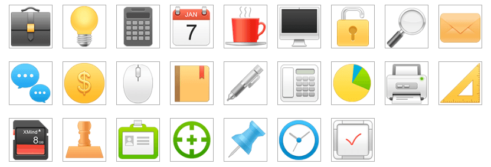
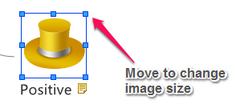
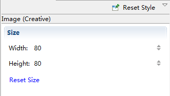

Clip Art
XMind has prepared more than one hundred high-quality images in the Clip Art that you can use in your maps. You can easily add images into a map. Also, you can easily change, format and delete added images.
Add an image to topic:- Open the ClipArt view by clicking "Window - Clip Art", or click the image icon on the toolbar and select "From Clip Art".
- Select the topic, and double-clicking on the target image.

Note: you can select multiple topics and add one image to each of these topics at the same time.
Format the added image:- Right-click the added image on topic.
- Select "Properties" to change size of this image. Or directly drag the window corner to change the size.


Change the image:- Click "View - Clip Art" to open ClipArt View; or click image icon on the toolbar and select "From Clip Art".
- selec the topic, and double-click another image on the clipart.
Delete image:Right click the image on topic, and select 'delete'.